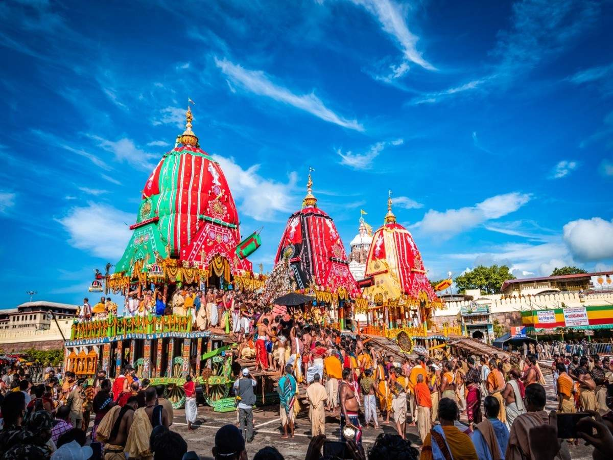
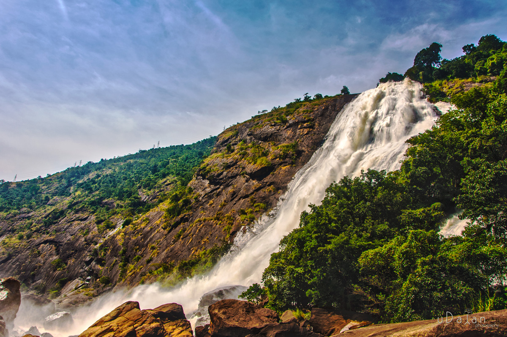
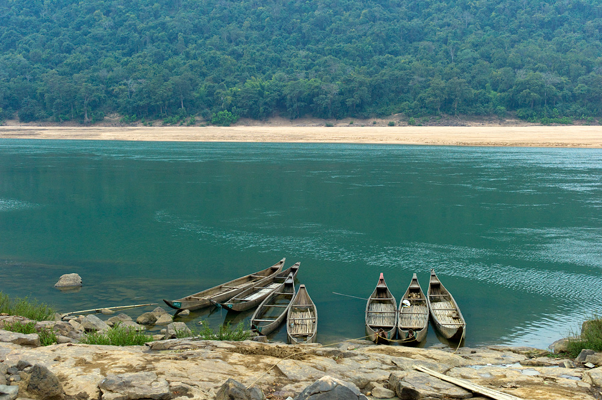

October to March (Winter) is the best time to visit Odisha. During these months the sky remains clear, making it ideal for sightseeing and outdoor activities. The famous Konark Dance festival takes place in February, making it all the more exciting to visit the state. The state enjoys a tropical monsoon climate throughout the year because of its proximity to the sea; hence, there are incessant rains during the Monsoon season from July to September. Summers from April to June are quite hot with occasional rainfalls making it quite uncomfortable for sightseeing. Hence it's advised to plan your trip accordingly.
March is when the summer season in Odisha commences, and it stretches till June. The sun is very harsh during this time, combined with high temperatures ? going up to 40 degrees Celsius. While you would want to stay indoors during the day, there's a lot to do once the sun starts settling in. Explore Bhubaneswar, Konak, and Puri to experience spirituality and culture up close and unwind at the beautiful Chilika Lake, surrounded by majestic dolphins.
Rath Yatra in Puri Orissa
Festivals such as the Chandan Yatra, one of the longest festivals held in Bhubaneshwar (42 days) and visited by thousands of pilgrimages, Mahabisuva Sankranti, to mark the beginning of a new year according to Odia calender, and the most popular ? Rath Yatra, that shows the journey of Lord Krishna from Gokul to Mathura ? are a cultural extravaganza. This venture is all you need to spend some time away from crazy schedules of life and explore the gems of Odisha.
Odisha's rainy season starts in July and lasts till October. At the beginning of June, Southwest monsoons head to the state and then is under its influence by July. This goes on throughout September. By the mid-October, the rains withdraw from this region altogether. Cyclones and tornadoes are frequented at the coastal areas of the state. This is also the time when major rivers start overflowing as the state receives an average rainfall of 150 cm. But fret not as there are plenty of things to do during this time. During this time, the hills of Eastern Ghats drape themselves in grey clouds, and a high amount of the rains are experienced in this area all day.
Duduma Waterfalls
The breathtaking waterfalls of Duduma is a sight to behold. You can also plan a trek around this area. Next up, head over to Hirakud Dam, one of the largest in India and watch the beautiful scenery as the gates are opened to the gushing water that flows towards the cities. Monsoons tend to make you stay indoors and drink a hot cup of joe while watching a tranquil downpour but things are slightly different in Orissa. The natural beauty of the state will impose upon outdoor activities more, especially for the adventure lovers.
Who doesn't love winters? The winter season in Odisha lasts from October to March. The weather can get quite chilly, with temperatures falling as low as 7 degrees Celsius. The beauty of Orissa's old edifices is underscored during this season, while a cold breeze brushing against your skin makes the experience even more delightful. This indeed is the best time to visit Odisha, as the weather is cold and dry and there's plenty to see and do. Visit Daringbadi, the Kashmir of Odisha to witness its breathtaking natural beauty. You might catch a snowfall if it's your lucky day.
Satkosia Tiger Reserve
This is also the time when nature lovers can visit the state's pine jungles, tiger reserves, coffee plantations, and lush green valleys. Watch ancient traditions up close as the famous Durga Puja takes place in October at the outskirts of Bhubaneswar. Another festival to watch out for is the Konark Dance Festival, which shows the elegance of Odissi dance. Odisha also becomes a photographer's paradise as many migratory birds arrive in the state during this season.